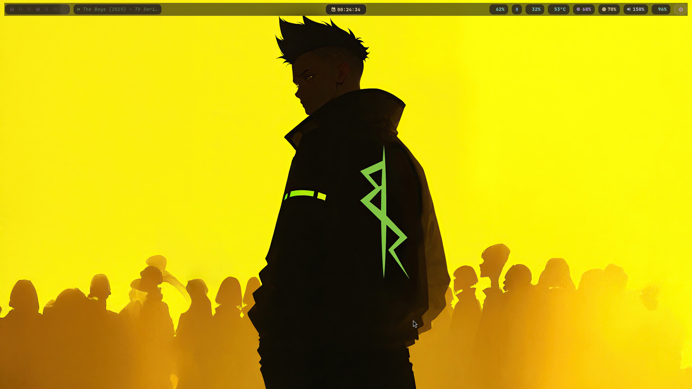
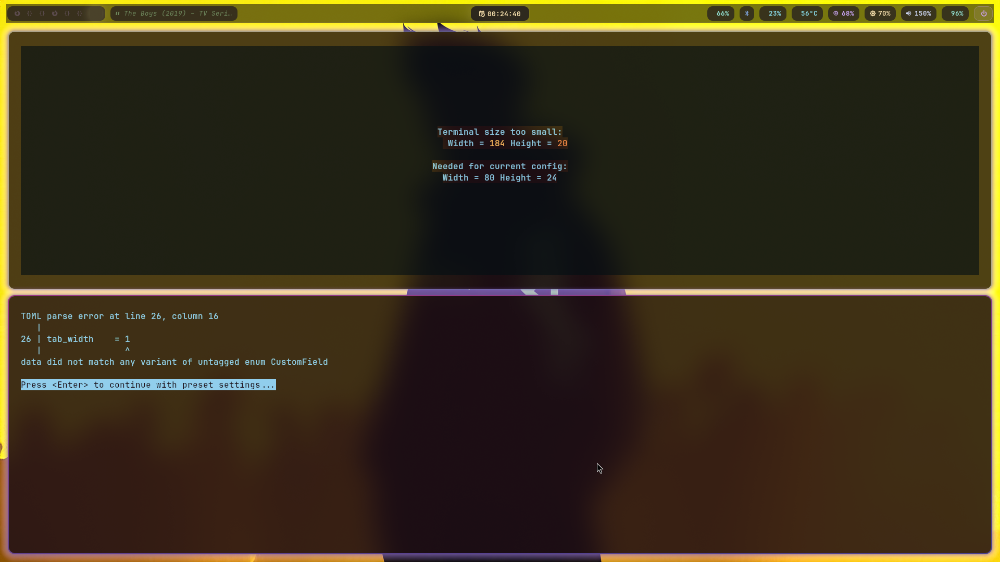

Keqing Electro
An ultra-premium, deeply customized Hyprland desktop environment for Arch Linux. Engineered with dynamic Pywal sync, fluid Bezier animations, and absolute elegance.
Lightning Fast Workflow
Dynamic Theming
Trigger SUPER+SHIFT+W to select a wallpaper via Rofi. Watch as Pywal instantly extracts the color palette and dynamically themes your entire OS on the fly.
Intelligent Waybar
Floating glass islands featuring live active window titles, media player synchronization (MPRIS), Japanese Kanji workspaces, and network integrations.
Fluid Physics
Custom-tuned randomized bezier curves. Every window spawn, workspace transition, and resizing action feels buttery smooth and incredibly satisfying.
The Archive

Pristine Desktop
A minimalist layout designed to eliminate distractions, highlighting the custom floating Waybar and the breathtaking electro wallpaper.

Master Layout Tiling
Hyprland's native master layout in action, featuring Yazi and Btop running natively in Kitty terminals with pure frosted glass transparency.
Automated Theme Deployment
A legacy showcase demonstrating the instant Pywal synchronization across active borders, terminal environments, and the Waybar.